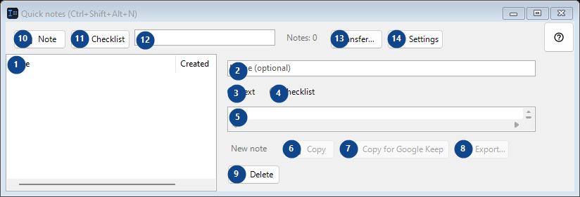
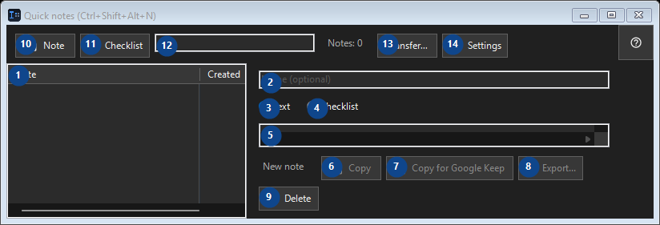

Quick notes (Ctrl+Shift+Alt+N)
What this is for
A small local notepad: open it with a chord, drop in a fragment of code or a thought, close it.


In this order
Read the numbered elements, choose the values you need, then use the window’s command to continue.
The elements
1. The elements
This area shows the current contents or status. Select an entry to work with it. Note / Created
Your shortcuts2. Choose or enter the value for the adjacent label. Review it before continuing.
Choose or enter the value for the adjacent label. Review it before continuing.
Your shortcuts3. Text
Use this command when you need the action named above. Review any confirmation before accepting it.
Your shortcuts4. Checklist
Use this command when you need the action named above. Review any confirmation before accepting it.
Your shortcuts5. Choose or enter the value for the adjacent label. Review it before continuing.
Choose or enter the value for the adjacent label. Review it before continuing.
Your shortcuts6. Copy
Use this command when you need the action named above. Review any confirmation before accepting it. This control is currently unavailable. Enable its feature or select an entry first.
Your shortcuts7. Copy for Google Keep
Use this command when you need the action named above. Review any confirmation before accepting it. This control is currently unavailable. Enable its feature or select an entry first.
Your shortcuts8. Export...
Use this command when you need the action named above. Review any confirmation before accepting it. This control is currently unavailable. Enable its feature or select an entry first.
Your shortcuts9. Delete
Use this command when you need the action named above. Review any confirmation before accepting it.
Your shortcuts10. Note
Use this command when you need the action named above. Review any confirmation before accepting it.
Your shortcuts11. Checklist
Use this command when you need the action named above. Review any confirmation before accepting it.
Your shortcuts12. Notes: 0
Choose or enter the value for the adjacent label. Review it before continuing.
Your shortcuts13. Transfer...
Use this command when you need the action named above. Review any confirmation before accepting it.
Your shortcuts14. Settings
Use this command when you need the action named above. Review any confirmation before accepting it.
Your shortcuts